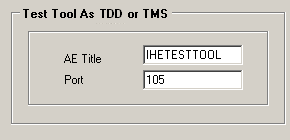

1. Configuring AE-title
and Ports
When the editor tool is started, the “Application
Entities” tab is shown (see screenshot below). The AE titles, ports and IP
Addresses of the various scenario actors (and dimse commands) can be
configured. In chapter 2 is a list of actors and dimes commands for each
scenario.

When a wrong format is typed in the
fields the characters turn red and saving is not possible.
1.1 Configuring the test tool AE-titles and Ports
The test tool is
either simulating a TMS (Treatment Management System) or a TDD (Treatment Delivery Device). In some scenarios, when
acting as a TMS it can also be acting as an Archive. The test tool will use
these settings to listen on a specific port. The archive is simulated as a
different entity and should have a different AE title and port number;
otherwise it is not possible to save the settings.


1.2 Configuring the SUT AE-titles and Ports
When the test
tool is acting as a TDD it must know the parameters of the TMS and Archive.
During the scenarios the TDD will send C-STORE requests and C-MOVE requests to
the Archive. And it will also send a C-FIND request, C-MOVE request and N-SET
and N-ACTION requests to the TMS. For both the archive as the TMS it could very
well be that only one AE title and port number is needed, therefore it is
possible to use the same settings for different dimse commands.
When the test
tool is acting as a TMS, it will most of the times react to incoming request.
Except once, when it will receive a C-MOVE request from the TDD, it should know
to which port number it should send the C-STORE requests.

2. Scenario settings
The test tool uses not
all settings for every scenario, in the list below is clarified which settings
of the SUT will be used.
|
TDD scenario’s * Settings test tool: TMS, Archive |
SUT settings |
|
(01) TDD retrieval of worklist |
|
|
(02) TDD Treatment Delivery Input Instances |
TDD[C-STORE] |
|
(03) TDD Deliver initialization |
TDD[C-STORE] |
|
(04a) TDD Deliver succes |
TDD[C-STORE] |
|
(04b) TDD Deliver cancel with radiation |
TDD[C-STORE] |
|
TMS scenario’s * Settings test tool: TDD |
SUT settings |
|
(01) TMS retrieval of worklist |
TMS[C-FIND] |
|
(02) TMS Treatment Delivery Input Instances |
|
|
(03) TMS Deliver initialization |
TMS[UPS,C-MOVE] |
|
(04a) TMS Deliver succes |
TMS[UPS] |
|
(04b) TMS Deliver cancel with radiation |
TMS[UPS] |
3. Adding or removing transfer syntaxes
It is possible to select transfer
syntaxes for both sender and receiver.
Default transfer syntaxes for the sender:
- 1.2.840.10008.1.2.1 (Explicit VR Little Endian (ELE))
- 1.2.840.10008.1.2 (Implicit VR Little Endian: Default Transfer
Syntax for DICOM (ILE))
- 1.2.840.10008.1.2.2 (Explicit VR Big Endian (EBE))
Default transfer syntaxes for the receiver:
- 1.2.840.10008.1.2.1 (Explicit VR Little Endian (ELE))

4. Debug settings
In this tab it
is possible to enable/disable some debug settings:
-
“Report Debug messages”: check to see debug messages in the DVT
logging, uncheck to disable them
-
“Report TBD Rule”: enable this to let all TBD rules report an
error message when executed, uncheck to disable these messages.

5. Set Dataset
Using the Set dataset
tab it is easy to place your dataset files in the correct directories.
In the textbox type in
the TDW directory where TDW test tool 2013 is installed.
Click the first
required button and select all RT objects - Dataset. (see Concept 1, 2, 4, 6
below
the picture)
For resumed treatment scenario
execution, click second required button and select only
RT Beams Treatment
Record file. (see Concept 4, 5, 6 below the picture)
Optionally, a set of
CT Images can be specified. (see Concept
3, 6 below the picture)
Before copying any
Dataset, click the Delete button – all previously used files in the dataset
directories will be
deleted. (see Concept 6 below the picture)
To understand the
Dataset manipulation, one needs to come to terms with several concepts
used in IHE-RO 2013
Test tools. These concepts are explained below the picture.

Concept 1
Datasets are loaded
dynamically (at the time of execution) and are not known to the test tool
beforehand – the only
information known beforehand is the location where dataset must reside.
This gives freedom to
the user regarding usage of multiple datasets. Say, user can have
Prepared Dataset for
different oncology machines (or types) When testing specific machine
(type) needs only to
conveniently copy (using TesttoolConfigurationEditor) needed datasets
and start using those
immediately.
Concept 2
For a Dataset to be
considered valid, it must consist of at least 3 DICOM files. These must
be exactly one file of
each of the following types: RT Plan, RT Delivery Instance, RT Record.
Presence of these files
is a prerequisite to and it is checked by each test scenario. Additional
DICOM files of other
types than previously mentioned are, of course, allowed.
Concept 3
The experience tells
us that DICOM files containing CT image information are large in size.
If CT files are part
of dataset, severe performance issues might surface during Dataset
verification and
information extraction, which takes place at the beginning of every test
scenario.
Therefore CT files are
kept apart from core Dataset files ensuring that CT files are loaded
(transmitted) during
actual test scenario flow only. Consequently, CT image files need to be
copied separately from
(core) dataset files. CT files are optional and not needed for
test scenarios
execution.
Concept 4
Since one of the main
requirements imposed to IHE-RO 2013 Test Tool set was support of
interrupted
treatments, concept of different workflows was introduced. For different
workflows,
different dataset are
used.
Concept 5
For treatments that
have been interrupted and should be resumed (exactly in the line with
Concept 4), a specific
RT Treatment Record file must be placed in the predefined location.
The significance of
this file lies in the progress of the treatment. For example if resume of
an interrupted
treatment of 50% is to be simulated with the test tool, the RT Treatment Record
should contain this
information. On the user interface of
TMS Deliver Cancel – test scenario
the progress of the
delivered beams should be filled in with the value: 50
IMPORTANT: The sop
instance UID of the RT Treatment Record of both Happy and
interrupted flow
should be the same!!
Concept 6
As user is free to use
arbitrary dataset – simply by copying it (by TesttoolConfigurationEditor)
to predefined location
– an undesired situation can emerge. Copying two Datasets in the
same location can
invalidate specified preconditions (Concept 2) causing test scenario to
fail. In the worst
case, the precondition will not be invalidated, test scenario will execute,
but yielding unpredictable
results regarding communicated DICOM data. In such situation,
it is very hard to
spot the real problem. Therefore it is suggested to delete all files in Dataset
directory prior to
copying any Dataset.